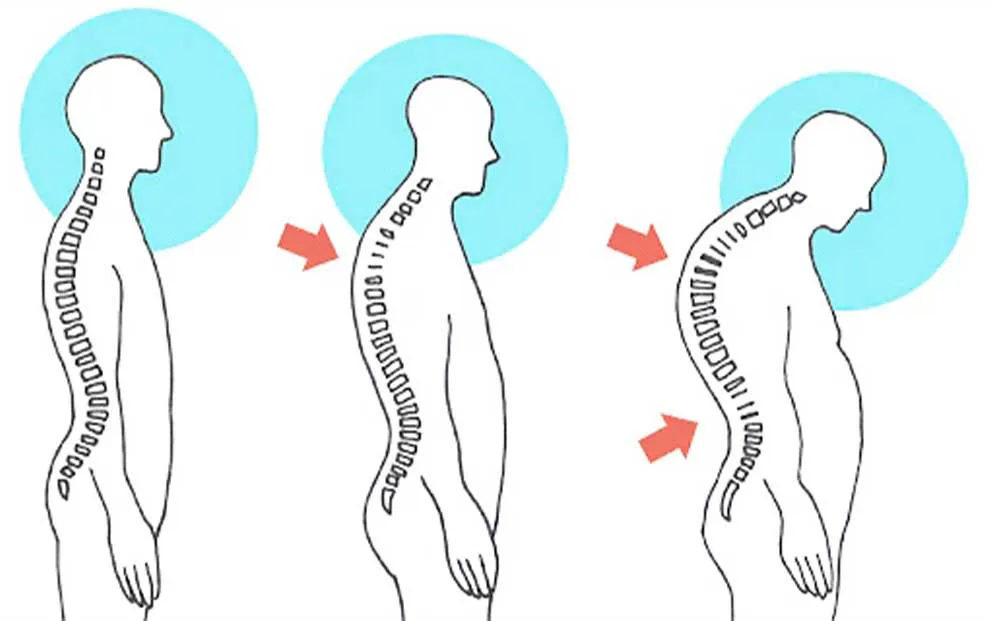
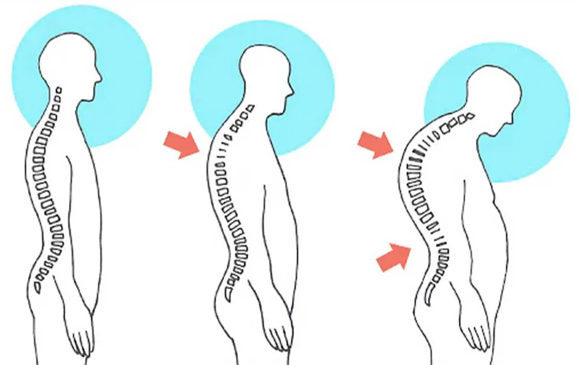
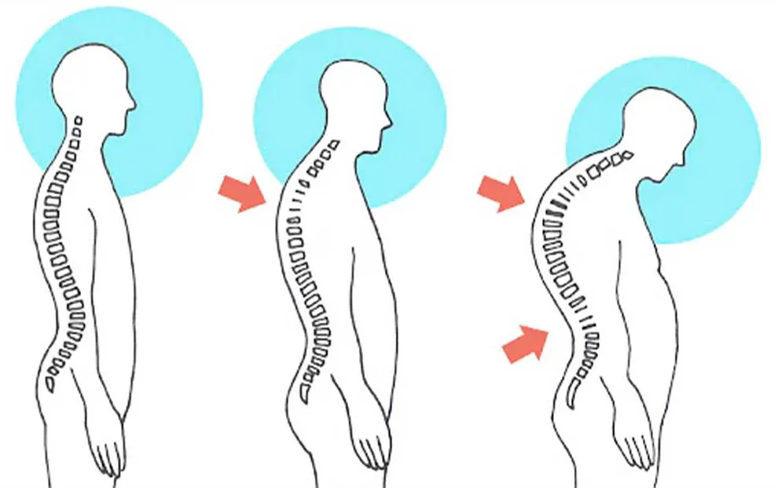

Acidentes de Trabalho no Teletrabalho
Acidentes de trabalho podem ocorrer mesmo em casa. É crucial adotar práticas seguras e organizar o espaço de trabalho para evitar incidentes.
 


Acidentes de trabalho podem ocorrer mesmo em casa. É crucial adotar práticas seguras e organizar o espaço de trabalho para evitar incidentes.
